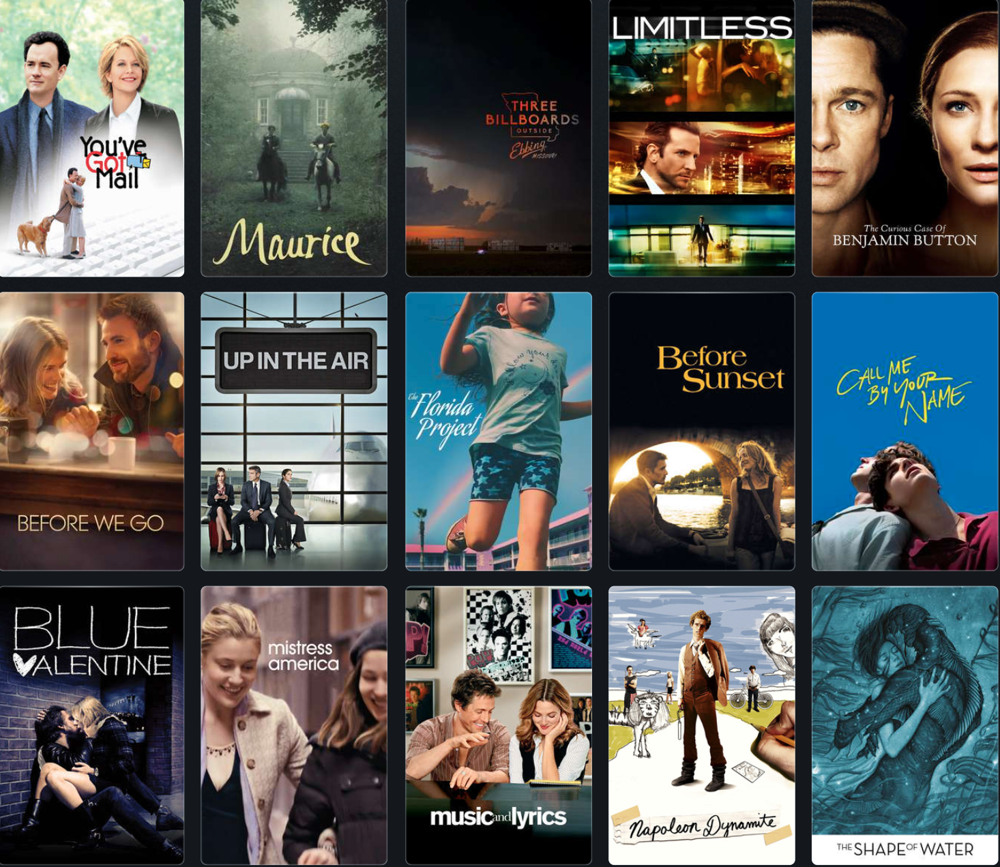
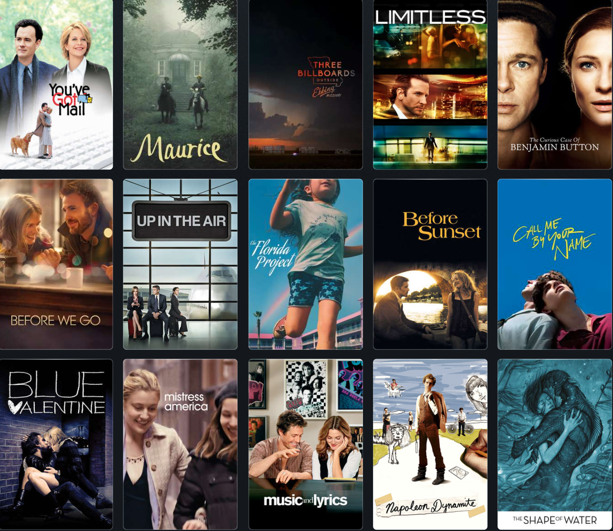
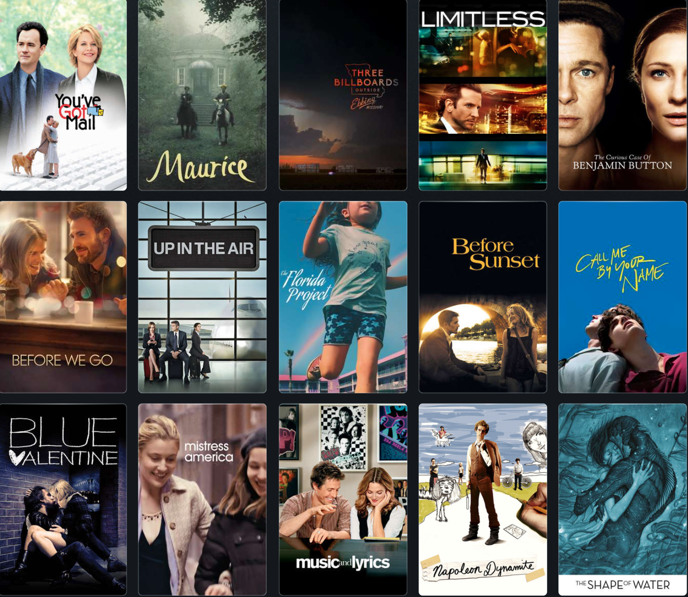

In these first steps, I looked towards letterboxd and all the films I had logged in over the past two years (since the start of Covid lockdown in March 2020). I found the posters on their own to be a great visual representaion of an escape, as each colour in their regtangular spaces gave its own voice. I knew I wanted to take advantage of this arragement and play with the movie posters, leading me to take screen shots in the following explorations.

ADD TEXT HERE
ADD TEXT HERE